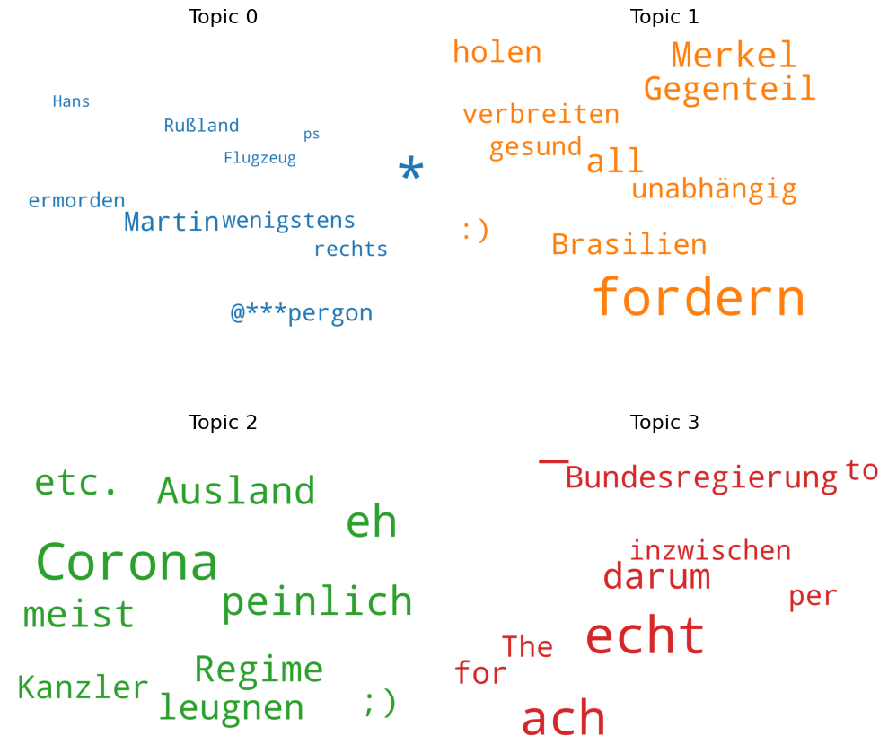

Topic modelling
Topic modelling#
import pandas as pd
from cleantext import clean
import pickle
from pathlib import Path
import string
import warnings
warnings.filterwarnings('ignore')
import nltk
nltk.download("stopwords")
from nltk.corpus import stopwords
import spacy
# model has to be installed via the following command: $(env) python -m spacy download de_core_news_md
spacy_model_german = spacy.load("de_core_news_md", disable=["parser", "ner"])
stop_words = set(stopwords.words('german'))
regular_punctuation = list(string.punctuation)
def get_lemmatized_text(text: str):
lemmatized_text = []
document = spacy_model_german(text)
for word in document:
lemmatized_text.append(word.lemma_)
return lemmatized_text
def remove_punctuation(text):
for punc in regular_punctuation:
if punc in text:
text = text.replace(punc, ' ')
return text.strip()
def tokenize_and_lemmatize_text(text: str):
text = text.replace("\n", "")
text = clean(text, no_emoji=True, lang="de")
text = remove_punctuation(text)
tokens = get_lemmatized_text(text)
tokens = [token for token in tokens if token != "--"]
tokens = [token for token in tokens if token not in stop_words]
tokens = [token for token in tokens if token != " " and token != ""]
return tokens
comments = pd.read_csv("data/youtube_comments_500.csv")
comments["Comments"] = comments["Comments"].astype(str)
preprocessed_comments = []
for index, row in comments.iterrows():
preprocessed_comments.append(tokenize_and_lemmatize_text(row["Comments"]))
preprocessed_comments[0:3]
[['Tag',
'groß',
'Bericht',
'immer',
'Panzer',
'liefern',
'ganz',
'schön',
'sinnlos',
'Vermittlung',
'Neuigkeit'],
['scholz',
'gut',
'Weiss',
'wieso',
'brauchen',
'Verteidigungsminister',
'Stelle',
'sparen'],
['grüne',
'früh',
'Peace',
'Zeichen',
'Symbol',
'heute',
'Panzer',
'wenigstens',
'klein',
'Haubitze',
'bedenken',
'Militär',
'ja',
'grün',
'grün',
'Wiese',
'wachsen',
'braun',
'Dreck']]
file = Path("data/youtube_comments_500_preprocessed.pkl")
if not file.exists():
with open("data/youtube_comments_500_preprocessed.pkl", "wb") as fw:
pickle.dump(preprocessed_comments, fw)
with open("data/youtube_comments_500_preprocessed.pkl", "rb") as fr:
preprocessed_comments = pickle.load(fr)
import gensim
import gensim.corpora as corpora
from gensim.models import CoherenceModel
import pyLDAvis.gensim_models
dictionary = corpora.Dictionary(preprocessed_comments)
dictionary.filter_extremes(no_below=20, no_above=0.8)
corpus = [dictionary.doc2bow(text) for text in preprocessed_comments]
lda_model = gensim.models.ldamodel.LdaModel(corpus, num_topics = 20, id2word=dictionary, passes=15, alpha="auto", eta="auto")
lda_model.save('lda_model_20.gensim')
lda_model = gensim.models.ldamodel.LdaModel.load("lda_model_10.gensim")
for index, topic in lda_model.show_topics(num_topics=10, num_words=10, formatted=False):
print(f"Topic {index}: \n{[word[0] for word in topic]}")
Topic 0:
['innen', '\n', 'Sektendepp', 'fordern', 'hetzen', 'Putinanhimmler', 'danken', 'Lüge', 'nix', 'Beweis']
Topic 1:
['Jahr', 'sagen', 'brauchen', 'afd', 'bitte', 'natürlich', 'glauben', 'letzter', 'klar', 'jemand']
Topic 2:
['Russland', 'Krieg', 'USA', 'Ukraine', 'Putin', 'EU', 'Coronaleugner', 'Waffe', 'Staat', 'russisch']
Topic 3:
['Behauptung', 'CDU', 'teuer', 'arm', 'Preis', 'besonders', 'Fakt', 'blöd', 'Ausländer', 'Christian']
Topic 4:
['Kommentar', 'The', 'wünschen', 'offensichtlich', 'dr', 'Beleidigung', 'passen', 'Rente', 'de', 'fehlen']
Topic 5:
['Name', 'beweisen', 'bald', 'Gas', 'tragen', 'Absonderung', 'Maske', 'kaufen', '50', 'Michael']
Topic 6:
['ja', 'mehr', 'gut', 'schon', 'Deutschland', 'mal', 'sollen', 'geben', 'immer', 'wer']
Topic 7:
['2', '1', '3', '5', '10', 'Million', '000', '4', 'Lara', 'Croft']
Topic 8:
[' ', ' ', 's', 'heute', 'Tagesschau', 'Tag', 'berichten', 'Thema', 'Medium', 'rd']
Topic 9:
['deutsch', ' ', 'grün', 'n', ' ', 'China', 'erster', 'Berlin', 'Scholz', 'Strom']
lda_model = gensim.models.ldamodel.LdaModel.load("lda_model_20.gensim")
for index, topic in lda_model.show_topics(num_topics=20, num_words=10, formatted=False):
if index < 20:
print(f"Topic {index}: \n{[word[0] for word in topic]}")
Topic 0:
['sehen', 'alt', 'nehmen', 'Mann', '@the', 'dagegen', 'handeln', '20', 'Bundeswehr', 'kriegen']
Topic 1:
['wann', '=', 'zumindest', 'hoffentlich', 'ehrlich', 'sowieso', 'illegal', '6', 'Pass', 'tv']
Topic 2:
['innen', 'Nachricht', 'gerne', 'wünschen', 'vergessen', 'blöd', 'scheinen', '@mrscrewy', 'Freund', 'angst']
Topic 3:
['sollen', 'warum', 'bekommen', 'erst', 'hoch', 'Leben', 'bezahlen', 'Strom', 'zurück', 'reichen']
Topic 4:
['glauben', 'wichtig', 'mussn', 'bekannt', 'wm', 'fehlen', '100', 'Polizist', 'extrem', 'weiterhin']
Topic 5:
['groß', 'Zeit', 'wohl', 'lang', 'kurz', 'Teil', 'Auge', 'kaum', 'wahr', 'merken']
Topic 6:
['mehr', 'Deutschland', 'geben', 'deutsch', 'gehen', 'ganz', 'Land', 'müssen', 'Regierung', 'USA']
Topic 7:
['Leute', 'lassen', 'schön', 'krank', 'passieren', 'tragen', 'lieber', 'Maske', 'verbieten', 'Lauterbach']
Topic 8:
['..', 'endlich', 'Panzer', 'schicken', 'toll', 'fahren', "'", 'schließen', 'danach', '@han']
Topic 9:
['Kind', 'daran', 'etwa', 'Familie', 'Grenze', 'Steuer', 'schaden', 'Maßnahme', 'usw.', 'kümmern']
Topic 10:
['Recht', 'voll', '@fckafd', 'erinnern', 'Hetzer', 'willst', 'Interesse', 'irgendwann', 'anstatt', 'entwickeln']
Topic 11:
['Corona', 'eh', 'peinlich', 'Ausland', 'meist', 'etc.', 'Regime', 'leugnen', ';)', 'Kanzler']
Topic 12:
['bleiben', 'Frau', 'Frage', 'stellen', 'Medium', 'nennen', 'Scholz', 'setzen', 'Sache', 'funktionieren']
Topic 13:
['Herr', 'nein', 'n', 'ard', 'Aussage', 'Michel', 'komisch', 'zdf', 'drauf', 'bisher']
Topic 14:
['Tagesschau', 'erster', 'eben', 'Thema', 'berichten', 'wieso', 'Propaganda', 'Rex', 'Imperator', '@wilhelm']
Topic 15:
['klein', 'darüber', 'her', 'passen', 'Silvester', 'nämlich', 'elser', 'Terrorist', 'Hass', 'Erfolg']
Topic 16:
['Mensch', 'einfach', 'vieler', 'natürlich', 'letzter', 'schlecht', 'heißen', 'Gesellschaft', 'jung', 'bestehen']
Topic 17:
['ja', 'gut', 'schon', 'mal', 'kommen', 'sagen', 'finden', 'gar', 'klar', 'dabei']
Topic 18:
['Tag', 'paar', 'grüne', 'teuer', 'ziehen', 'gewinnen', 'kosten', 'super', 'weder', 'Ding']
Topic 19:
['echt', '_', 'ach', 'darum', 'for', 'Bundesregierung', 'to', 'The', 'per', 'inzwischen']
lda_model = gensim.models.ldamodel.LdaModel.load("lda_model_50.gensim")
for index, topic in lda_model.show_topics(num_topics=50, num_words=10, formatted=False):
if index < 20:
print(f"Topic {index}: \n{[word[0] for word in topic]}")
Topic 0:
['mehr', 'sollen', 'müssen', 'tun', 'bekommen', 'Geld', 'Politik', 'bezahlen', 'Bürger', 'zerstören']
Topic 1:
['stellen', 'nix', 'fordern', 'möchten', 'meister', 'ständig', 'solange', 'peinlich', 'Armee', 'zusätzlich']
Topic 2:
['..', '.....', 'wenig', 'informieren', 'drauf', 'soweit', 'aussehen', 'leer', 'abgeben', 'scheinbar']
Topic 3:
['Tagesschau', 'Kommentar', 'schreiben', 'viele', 'lesen', 'dank', '@fckafd', 'kannst', 'freuen', '=']
Topic 4:
['Demokratie', 'kosten', 'nutzen', 'Sicherheit', 'ansehen', 'belegen', 'gucken', 'erleben', 'gestalten', 'verursachen']
Topic 5:
['bekannt', 'bestimmt', 'Realität', 'illegal', 'einsetzen', 'aufgrund', 'Leistung', 'üblich', 'betrachten', 'Bedingung']
Topic 6:
['\n', 'Herr', 'Klimawandel', 'ziehen', 'super', 'Minute', 'total', 'lieben', 'soviel', 'Stunde']
Topic 7:
['einfach', 'deshalb', 'Rentner', 'Generation', 'bloß', 'ähnlich', 'Stelle', 'entweder', 'Sprache', 'vorstellen']
Topic 8:
['verlieren', 'System', 'Typ', 'Video', 'lediglich', 'betreiben', 'weißen', 'warm', 'konsequent', 'Willkür']
Topic 9:
['mal', 'gehen', 'endlich', 'Name', 'arbeiten', 'wann', 'darum', 'Kopf', 'Berichterstattung', 'Alexander']
Topic 10:
['Jahr', 'seit', 'nie', 'Youtube', 'Lügner', 'löschen', 'verfolgen', 'feiern', 'Rakete', 'Rumänien']
Topic 11:
['gerne', 'Bevölkerung', 'raus', 'Teil', 'Gewalt', 'außerdem', 'wen', 'xd', 'nett', 'vertreten']
Topic 12:
['lassen', 'kämpfen', 'tragen', 'Wolf', 'Maske', 'Lauterbach', 'stecken', 'geh', 'scheiß', 'melden']
Topic 13:
['ganz', 'Welt', 'wichtig', 'ach', 'Gesellschaft', 'setzen', 'demokratisch', 'lachen', 'kaputt', 'international']
Topic 14:
['Million', 'sprechen', 'etwa', 'Rente', 'Korruption', 'Michel', 'extrem', 'mehrere', 'billig', 'gesund']
Topic 15:
['vollständig', 'gesamt', 'tja', 'unbedingt', 'bisschen', 'Leid', 'Liebe', 'empfehlen', 'Steuerzahler', 'zig']
Topic 16:
['sagen', 'ab', 'bitte', 'echt', 'falsch', 'fast', 'CDU', '20', 'morgen', 'Uhr']
Topic 17:
['schaffen', 'eur', 'linker', 'damals', 'Arbeit', 'Freund', 'Angst', 'Gegenteil', 'warten', 'Gefahr']
Topic 18:
['*', 'Michael', '@***pergon', 'unglaublich', '3.', 'kommunistisch', 'These', 'anderswo', 'wk', 'canceln']
Topic 19:
['geben', 'Leute', 'klein', 'genug', 'bereits', 'Corona', 'Wahrheit', 'suchen', 'wahrscheinlich', 'kriegen']
from matplotlib import pyplot as plt
from wordcloud import WordCloud
import matplotlib.colors as mcolors
cols = [color for name, color in mcolors.TABLEAU_COLORS.items()]
cloud = WordCloud(background_color='white', width=2500, height=1800, max_words=10, colormap='tab10', color_func=lambda *args, **kwargs: cols[i], prefer_horizontal=1.0)
topics = lda_model.show_topics(formatted=False)
fig, axes = plt.subplots(2, 2, figsize=(10,10), sharex=True, sharey=True)
for i, ax in enumerate(axes.flatten()):
fig.add_subplot(ax)
topic_words = dict(topics[i][1])
cloud.generate_from_frequencies(topic_words, max_font_size=300)
plt.gca().imshow(cloud)
plt.gca().set_title('Topic ' + str(i), fontdict=dict(size=16))
plt.gca().axis('off')
plt.subplots_adjust(wspace=0, hspace=0)
plt.margins(x=0, y=0)
plt.tight_layout()
plt.show()

lda_model = gensim.models.ldamodel.LdaModel.load("lda_model_10.gensim")
lda_display = pyLDAvis.gensim_models.prepare(lda_model, corpus, dictionary, sort_topics=False)
pyLDAvis.display(lda_display)
/Users/I518152/opt/miniconda3/envs/ccs-german-youtube-comments/lib/python3.9/site-packages/pyLDAvis/_prepare.py:246: FutureWarning: In a future version of pandas all arguments of DataFrame.drop except for the argument 'labels' will be keyword-only.
default_term_info = default_term_info.sort_values(